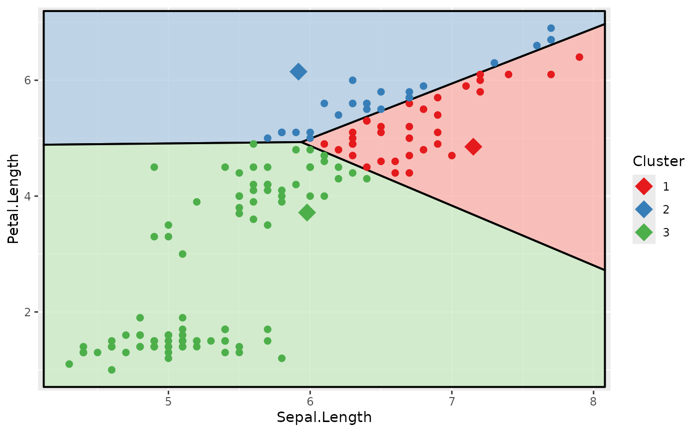

For a given dataset and given centres, cluster_with_centers()
assigns each data point to its closest centre and then recomputes
the centres as the mean of all points assigned to each class. An initial
set of random cluster centres can be obtained with init_rand_centers().
These functions can be used to visualise the mechanism of k-means.
Usage
cluster_with_centers(data, centers)
init_rand_centers(data, n, seed = sample(1000:9999, 1))Value
a list containing two tibbles:
centers: the new centres of the clusters computed after cluster assignment with the given centrescluster: the cluster assignment for each point indatausing the centres that were passed to the function
Examples
# demonstrate k-means with iris data
# keep the relevant columns
iris2 <- iris[, c("Sepal.Length", "Petal.Length")]
# initialise the cluster centres
clust <- init_rand_centers(iris2, n = 3, seed = 2435)
# plot the data with the cluster centres
library(ggplot2)
ggplot(iris2, aes(x = Sepal.Length, y = Petal.Length)) +
geom_point(data = clust$centers, aes(colour = factor(1:3)),
shape = 18, size = 6) +
geom_point() +
scale_colour_brewer(palette = "Set1")
# assign clusters and compute new centres
clust_new <- cluster_with_centers(iris2, clust$centers)
# plot the data with clustering
clust$cluster <- clust_new$cluster
voronoi_diagram(clust, x = "Sepal.Length", y = "Petal.Length",
data = iris2)

# plot the data with new cluster centres
clust$centers <- clust_new$centers
voronoi_diagram(clust, x = "Sepal.Length", y = "Petal.Length",
data = iris2, colour_data = FALSE)
# this procedure may be repeated until the algorithm converges